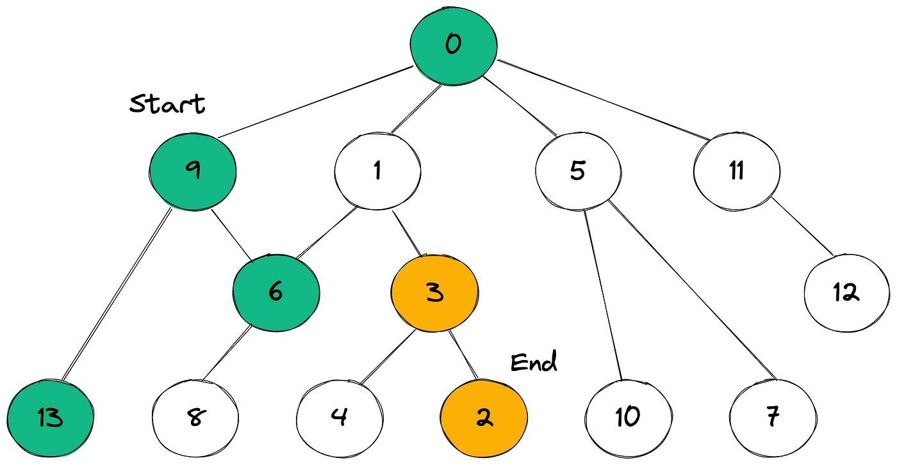

Bidirectional search
The bidirectional search it’s an algorithm for finding the shortest (or the lowest-cost) path between the start and end nodes in a graph. Bidirectional search replaces single search graph(which is likely to grow exponentially) with two smaller sub graphs, one starting from initial vertex and other starting from goal vertex. The search terminates when two graphs intersect. (ref)
